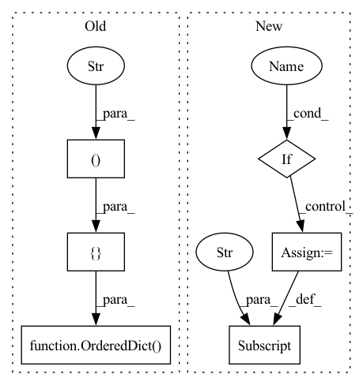

Pattern ID :9388

Before Change
squeezed_channels = make_divisible(int(channels * ratio), 8)
gating_fn = gating_fn if gating_fn else _SE_GATING_FN
self.se = nn.Sequential(OrderedDict([
("pooling", nn.AdaptiveAvgPool2d((1, 1))),
("reduce", Conv2d1x1(channels, squeezed_channels, bias=True)),
("relu", inner_activation_fn(inplace=True)),
("expand", Conv2d1x1(squeezed_channels, channels, bias=True)),
("sigmoid", gating_fn()),
]))
def forward(self, x):
return x * self.se(x)
After Change
layers["pooling"] = nn.AdaptiveAvgPool2d((1, 1))
layers["reduce"] = Conv2d1x1(channels, squeezed_channels, bias=True)
if _SE_USE_NORM:
layers["norm"] = nn.BatchNorm2d(squeezed_channels)
layers["relu"] = inner_activation_fn(inplace=True)
layers["expand"] = Conv2d1x1(squeezed_channels, channels, bias=True)
layers["sigmoid"] = gating_fn()
In pattern: SUPERPATTERN
Frequency: 3
Non-data size: 6
Instances
Fragment ID: 33593072
Project Name: ffiirree/cv-models
Commit Name: e622b26dcf62b8ec88e80183f5ba0cef941cb223
Time: 2021-09-13
Author: ice_qi@163.com
File Name: models/core/blocks.py
M Class Name: SEBlock
N Class Name: SEBlock
M Method Name: __init__(5)
N Method Name: __init__(5)
M Parent Class: nn.Module
N Parent Class: nn.Module
M File Name: models/core/blocks.py
N File Name: models/core/blocks.py
M Start Line: 447
M End Line: 456
N Start Line: 462
N End Line: 475
'>
Before Change
@property
def outputs(self) -> Mapping[str, Mapping[int, str]]:
probs = [("probs", {0: "batch_size"})]
// Shape of present states (past states when outputting)
// [past_key_values, batch_size, n_head, total_seq_len, d_head]
// Note that total_seq_len is seq_len + past_seq_len
present_key_values = [(f"present_{i}", {1: "batch_size", 3: "total_seq_len"}) for i in range(self.config.n_layer)]
return OrderedDict(probs + present_key_values)
After Change
def outputs(self) -> Mapping[str, Mapping[int, str]]:
outputs = super().outputs
if self.use_past:
for i in range(self.num_layers):
// [past_key_values, batch_size, n_head, total_seq_len, d_head]
// Note that total_seq_len is seq_len + past_seq_len
outputs[f"present_{i}"] = {1: "batch_size", 3: "total_seq_len"}
return outputs
'>
Fragment ID: 33593070
Project Name: microsoft/archai
Commit Name: 8254a072f90116d5a1285a02111a26ada38271f4
Time: 2022-12-16
Author: gth.rosa@uol.com.br
File Name: archai/nlp/onnx/config_utils/onnx_config_base.py
M Class Name: OnnxConfigWithPast
N Class Name: OnnxConfigWithPast
M Method Name: outputs(1)
N Method Name: outputs(1)
M Parent Class: OnnxConfig
N Parent Class: OnnxConfig
M File Name: archai/nlp/onnx/config_utils/onnx_config_base.py
N File Name: archai/nlp/onnx/config_utils/onnx_config_base.py
M Start Line: 118
M End Line: 125
N Start Line: 113
N End Line: 121
'>
Before Change
@property
def inputs(self) -> Mapping[str, Mapping[int, str]]:
input_ids = [("input_ids", {0: "batch_size", 1: "seq_len"})]
// Shape of past states
// [past_key_values, batch_size, n_head, past_seq_len, d_head]
past_key_values = [(f"past_{i}", {1: "batch_size", 3: "past_seq_len"}) for i in range(self.config.n_layer)]
return OrderedDict(input_ids + past_key_values)
@property
def outputs(self) -> Mapping[str, Mapping[int, str]]:
probs = [("probs", {0: "batch_size"})]
After Change
def inputs(self) -> Mapping[str, Mapping[int, str]]:
inputs = super().inputs
if self.use_past:
for i in range(self.num_layers):
// [past_key_values, batch_size, n_head, past_seq_len, d_head]
inputs[f"past_{i}"] = {1: "batch_size", 3: "past_seq_len"}
return inputs
'>
Fragment ID: 33593071
Project Name: microsoft/archai
Commit Name: 8254a072f90116d5a1285a02111a26ada38271f4
Time: 2022-12-16
Author: gth.rosa@uol.com.br
File Name: archai/nlp/onnx/config_utils/onnx_config_base.py
M Class Name: OnnxConfigWithPast
N Class Name: OnnxConfigWithPast
M Method Name: inputs(1)
N Method Name: inputs(1)
M Parent Class: OnnxConfig
N Parent Class: OnnxConfig
M File Name: archai/nlp/onnx/config_utils/onnx_config_base.py
N File Name: archai/nlp/onnx/config_utils/onnx_config_base.py
M Start Line: 108
M End Line: 114
N Start Line: 102
N End Line: 109